Week 6
This week the assignments are:
1. What are the design rules and limitations of the 3D printers.
2. Print the Arduino case.
3. Design and print an object that could only be printed additively.
4. 3D scan and print an object.
5. Make a paper mask using 3D scanning.
First of all, the limitations of Makerbot Replicator Gen 5. Using the tolerance test, I ascertained that the minimum width for printing is about 0.0635 inches for the pinnacle. However, in terms of drilling holes or construction solids, it can go down to about 0.0355 inches.

For the arduino case, I designed it to be the exact dimensions. However, the outputs could not fit in because it was too exact.

The original file is here.
Thus I changed the dimensions and printed again. The result fit better than the first one, but the hollowed space for outputs messed it up, so I went back to Fusion 360 and redisigned it.
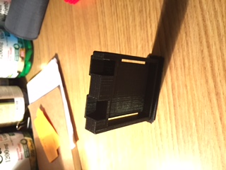The new design hollowed out the entire interior except for an 1/8" patting around the edges and the product is this.
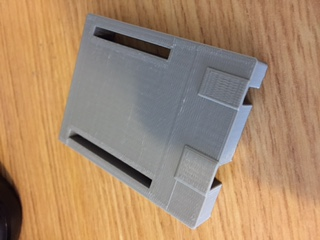The output seems to still be a problem, but it also could be that I set the dimension wrong. Nevertheless, the size and space left for wires fits nicely.
My design for the object that could only be printed additively is very simple. The most prominent feature that additive printing has but subtractive has not is the printing of hollowed objects. Thus, my design is just a box with a rectangular prism cut out inside and a hole drilled from the surface.

The final product is a bit too small, but the basic idea of drilling holes and inside hollow could be clearly seen.


The original file is here.
For the fourth assignment, I scanned and printed my bust (it covers almost all of the upper body but let's just call it a bust). First using the Knockout 3D and Meshmixer I created this bust.
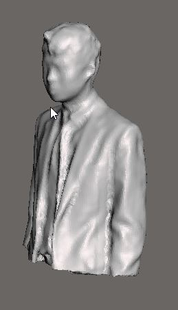Howerver, I did not turn on the support when I export the file, thus failing the job. The second time I tried to print it, the bust didn't come out either.
Finally, on my third try, the bust took shape, though the filament ran out and I lost half my head.
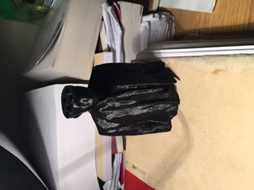But this also shows that the makerbot file is correct, so I printed it again and finally got my bust.
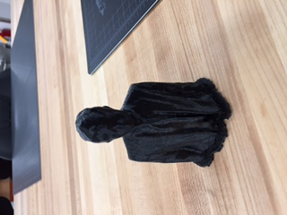In order to fill in my lost brain, I went online and downloaded a software called Invesalius that can construct a 3D model from the MRI scans of a person. I downloaded the demo file for MRI and followed the steps to get a nice model of the head.
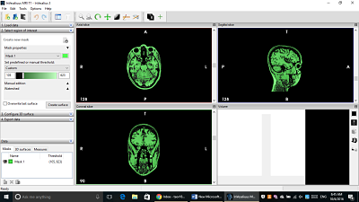 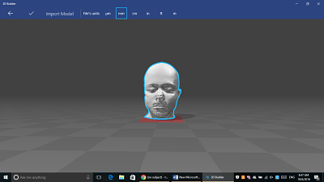 The originial file is here.Then I imported the model into meshmixer and cleaned it up for 3D printinf. After the laborious selecting and deleting, I printed the miniature brain model.
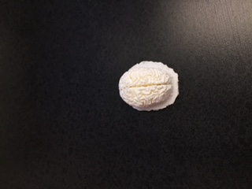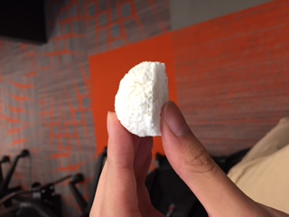
The combination of the white brain and the black bust looks neat.
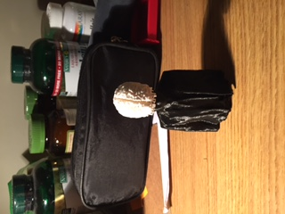For the fifth assignment, Mr. Gerber took three mug shots for me and sent it to the company making paper masks. I will try them on for trick or treat!
For German class, Peter and I were trying to 3D print the Berlin Buddy Bear model. We downloaded a model from Thingiverse and touched it up with Meshmixer. The final product looks very life-like----except that we cut out the tail of the bear because it is "too ugly".
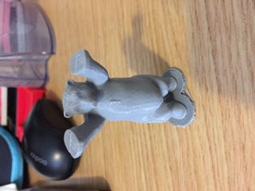